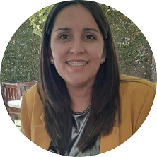

|  | Silvina AmarfilAbogada Soy Abogada de la Dirección Provincial de las Mujeres, Géneros y Diversidad. Mi función es asesorar legalmente a las víctimas de violencia por motivos de género, cuando así lo requieran. Actualmente estudio Web Development.
|
| 2021-2022 | Asesoría Legal en la Dirección Provincial de la Mujer.Dirección de la Mujer- Ministerio de Desarrollo Humano y Promoción Social,San Juan- Argentina. Actualidad |
| 2018-2020 | Abogada litigante independiente.Estudio Jurídico, San Juan- Argentina. Actualida |
| 2015-2016 | Administrativo. Municipalidad de Rawson, San Juan- Argentina. 2015-2017 |
|
|